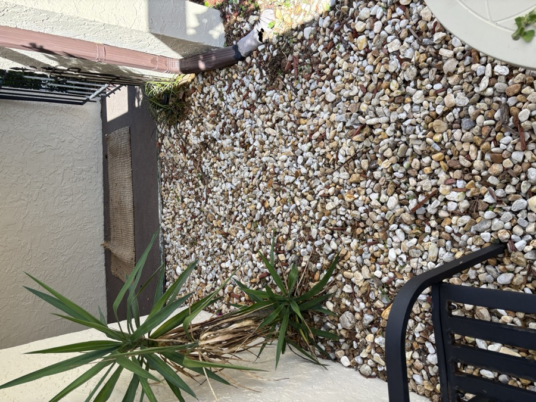
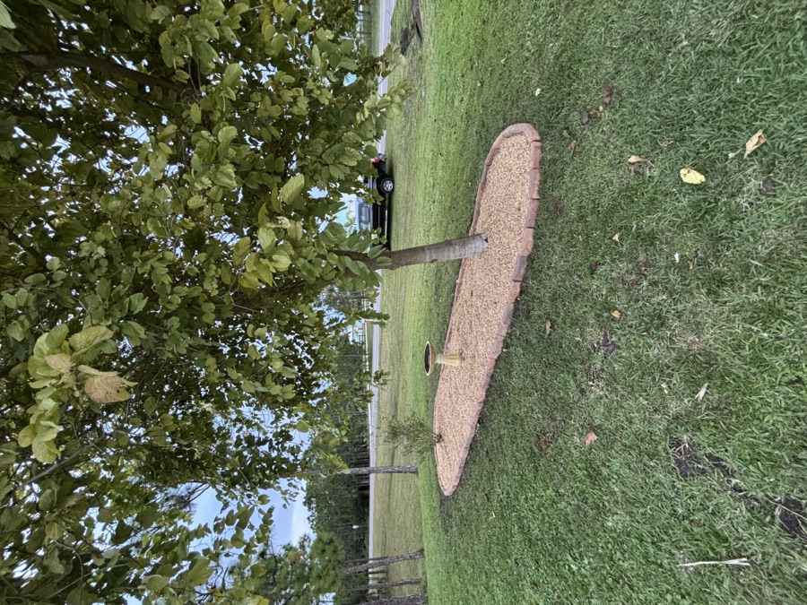
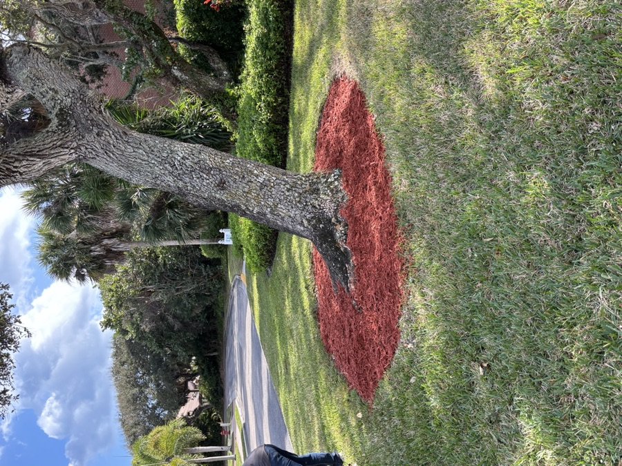
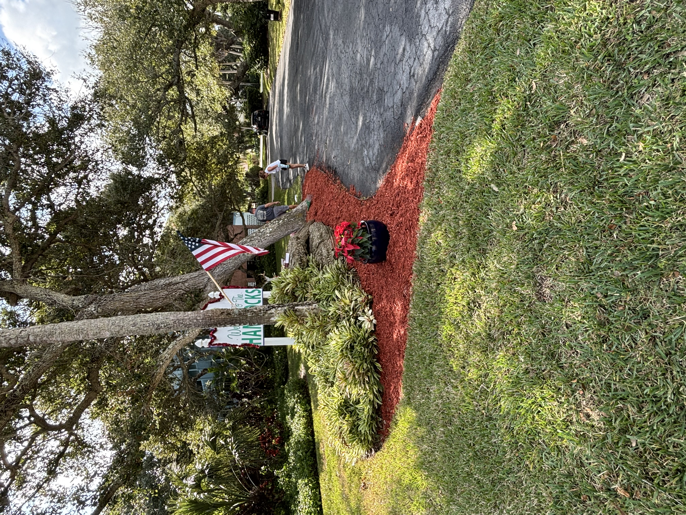
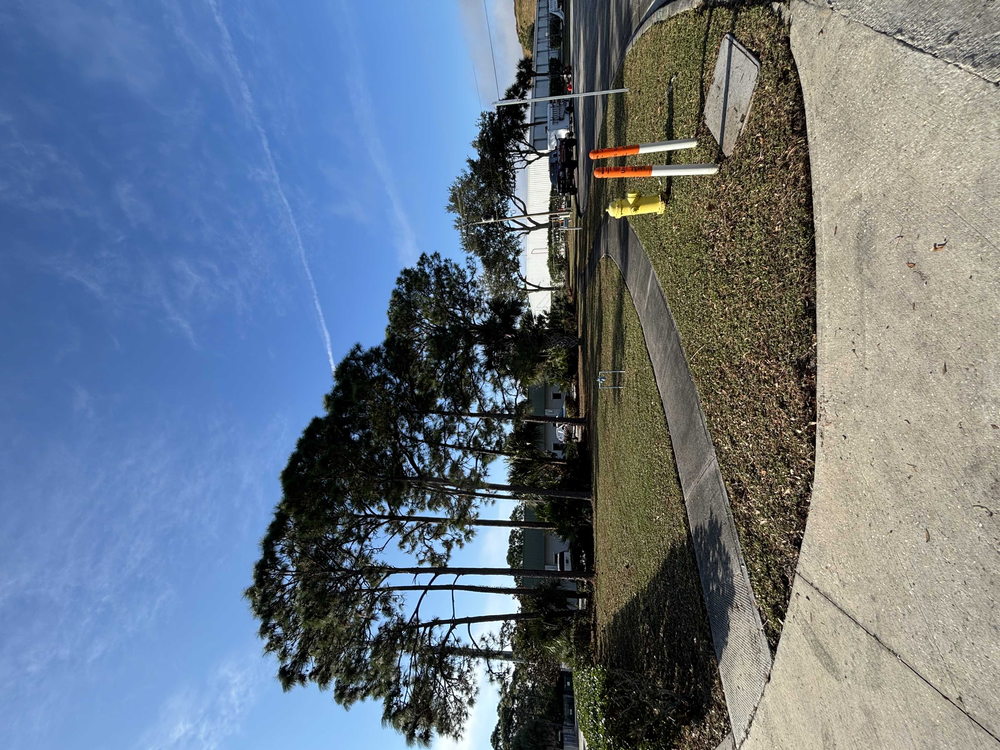
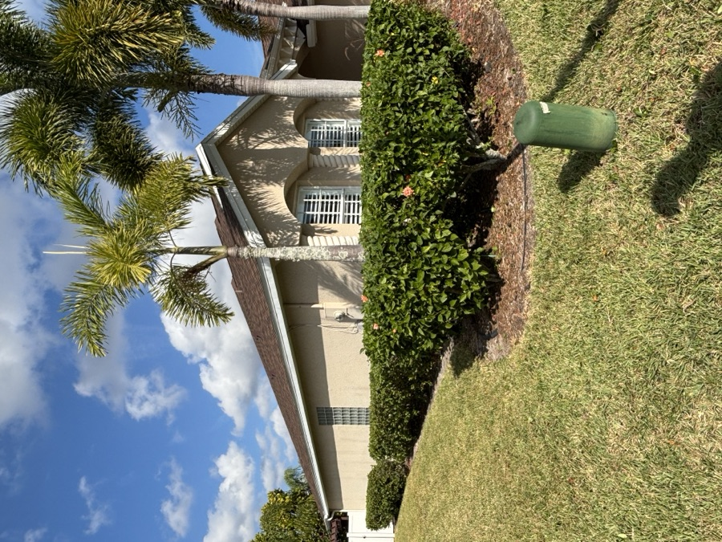
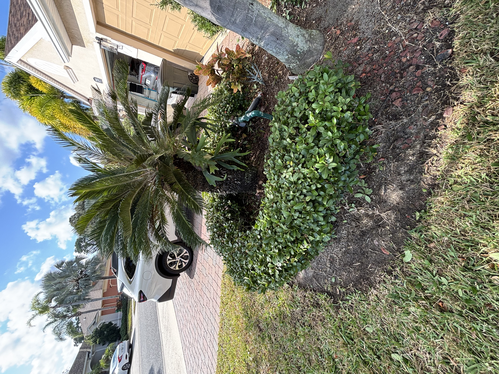
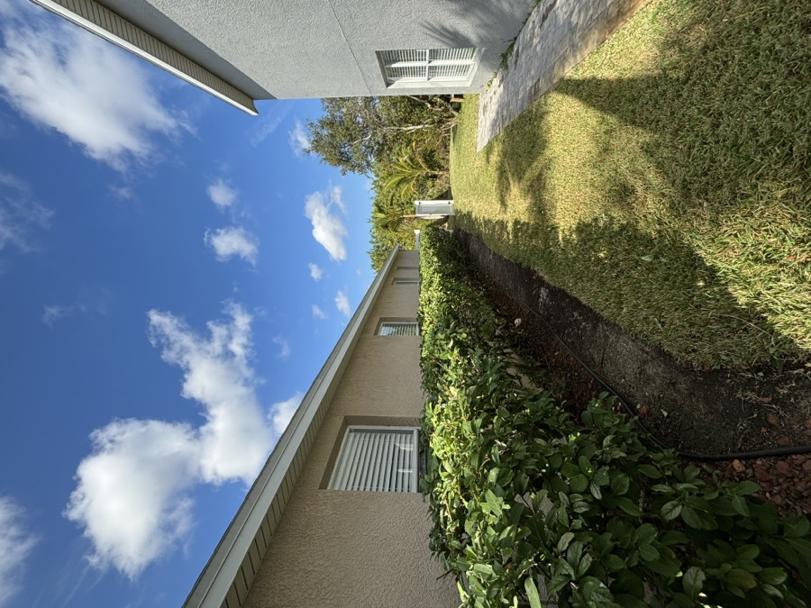
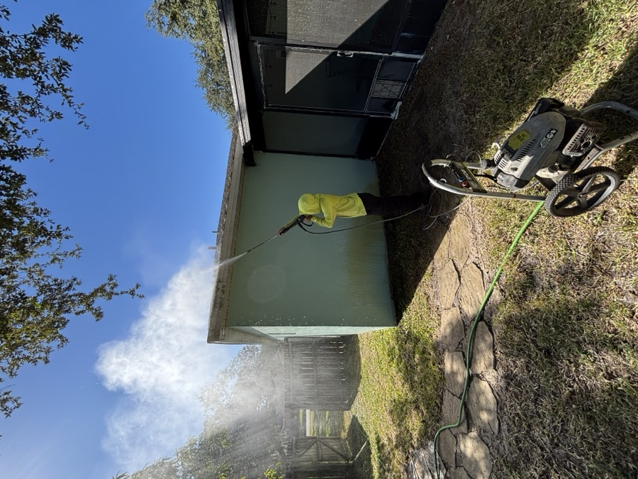

Lawn Maintenance — Melbourne, FL

Mulch Installation — Brevard County

Mulch Beds & Planting — Melbourne, FL

Landscape Design & Planting — Melbourne, FL

Landscaping Project — Melbourne, FL

Property Maintenance — Brevard County

Rock & Gravel Installation — Melbourne, FL

Landscaping In Progress — Brevard County

Residential Landscaping — Melbourne, FL

Shrub Trimming — Melbourne, FL

Yard Work — Melbourne, FL

Residential Project — Brevard County

Landscape Cleanup — Melbourne, FL

Landscape Project — Melbourne, FL

Yard Transformation — Brevard County

Outdoor Landscaping — Melbourne, FL

Foundation Hedge Trimming — Melbourne, FL

Sod Prep & Installation — Brevard County

Stone Edging — Melbourne, FL

Landscaping Project — Melbourne, FL

Stump Grinding & Tree Removal — Brevard County
Like What You See?
Get a free estimate for your Melbourne, FL property today.